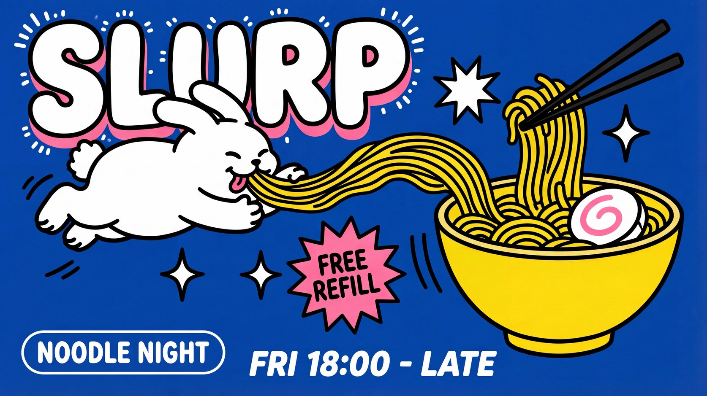
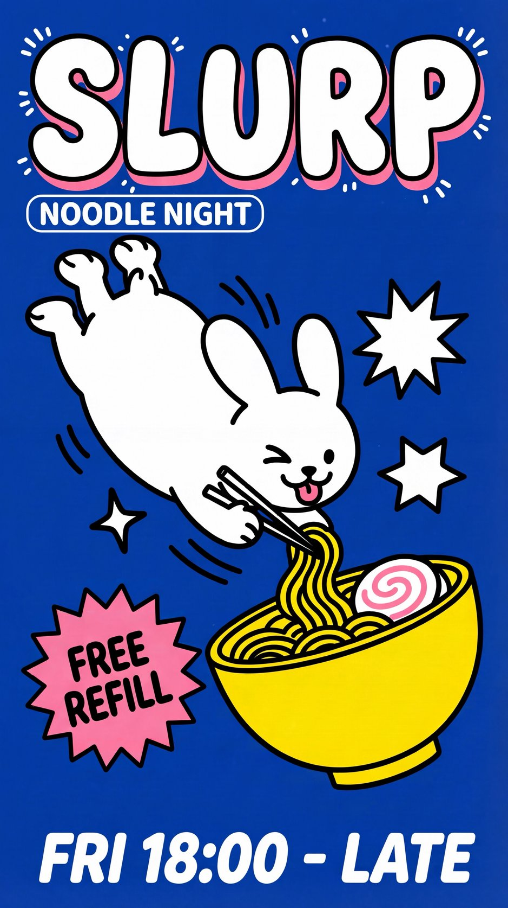
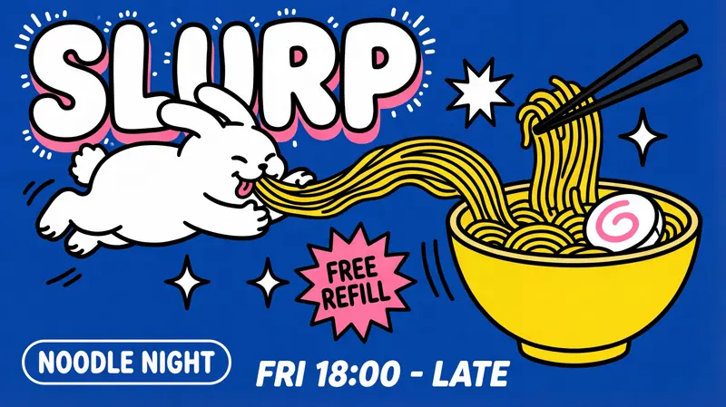
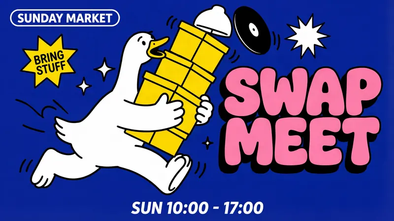
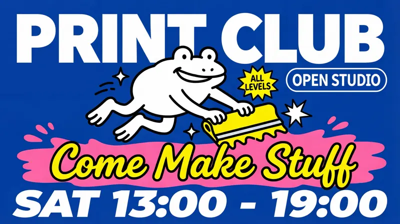
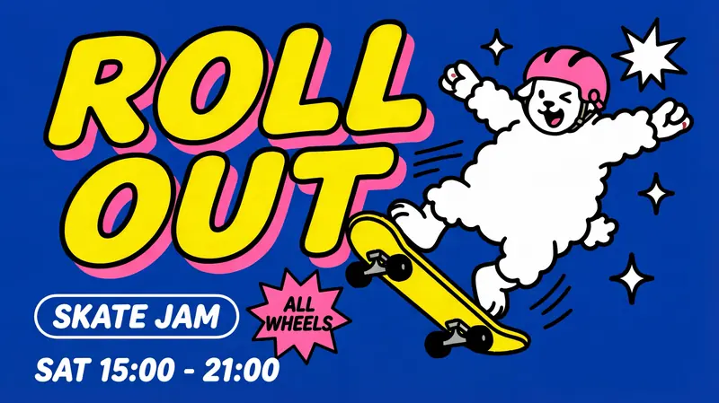

Type Posters · AI image style prompt
Cobalt Pals
Original white blob-animal mascot event posters on solid cobalt blue: thick black marker outlines, flat fills, yolk yellow props, bubblegum pink accents and a different hand-drawn title lettering per case.


4 example cases
Same style.json, different subjects. Each case's values are in the examples section of the JSON.




What this style does
Original white blob-animal mascot event posters on a solid cobalt blue ground: thick black marker outlines, pure flat fills and a fixed five-colour palette (cobalt blue, white, black, yolk yellow, bubblegum pink). Each case gets its own hand-drawn title lettering (bubble letters, puffy capitals with a black extrude, tight heavy grotesk with brush script, slanted rounded italics with an offset shadow), plus pill labels, starburst stickers, four-point sparkles and short motion ticks.
Signature traits
- Flat 2D cartoon event poster on one solid cobalt blue ground that fills the whole frame; no gradient, no texture, no photo.
- Original white blob-animal mascot drawn with a uniformly thick, slightly wobbly hand-drawn black marker outline, pure white flat fill, tiny dot or squint eyes, mitten paws, no shading.
- The mascot is huge, caught mid-action on a steep diagonal and cropped by at least one poster edge; never a calm centred standing pose.
- Fixed five-colour palette that all appears in every poster: cobalt blue ground, pure white, ink black outline, yolk yellow for the hero prop, bubblegum pink for one loud lettering or ink element.
- One short title as enormous hand-drawn display lettering with a thick black outline. The lettering style is designed per case (puffy bubble letters, fat blob capitals with black extrude, tight heavy grotesk with brush script, chunky slanted italic with offset shadow) and never repeats inside the series.
- Sticker-like accent kit: one rounded outlined pill label, one spiky starburst badge with two short words, black four-point sparkles with white centres, short black motion ticks, one heavy italic white info line.
style.json
{
"schema_version": "2.2",
"style_name": "Cobalt Pals",
"style_slug": "cobalt-pals",
"style_summary": "Original white blob-animal mascot event posters on a solid cobalt blue ground: thick black marker outlines, pure flat fills and a fixed five-colour palette (cobalt blue, white, black, yolk yellow, bubblegum pink). Each case gets its own hand-drawn title lettering (bubble letters, puffy capitals with a black extrude, tight heavy grotesk with brush script, slanted rounded italics with an offset shadow), plus pill labels, starburst stickers, four-point sparkles and short motion ticks.",
"category": "Type Posters",
"style_version": "1.0",
"environment_variables": {
"ASPECT_RATIO": "9:16 or 16:9",
"STYLE_FIDELITY_ANCHORS": "Runtime shared CORE and FLEX rules",
"SOURCE_CONTENT_TO_AVOID": "Runtime exclusions from all three references",
"SUBJECT": "Original white blob-animal mascot and its yellow hero prop",
"SUBJECT_ACTION": "Action and pose",
"MAIN_TEXT": "Exact short title",
"DESIGN_DIRECTION": "Mascot, prop and title placement with landscape adaptation, title lettering style, secondary text"
},
"style_fidelity_anchors": [
"[CORE] Flat 2D cartoon event poster on one solid cobalt blue ground that fills the whole frame; no gradient, no texture, no photo.",
"[CORE] Original white blob-animal mascot drawn with a uniformly thick, slightly wobbly hand-drawn black marker outline, pure white flat fill, tiny dot or squint eyes, mitten paws, no shading.",
"[CORE] The mascot is huge, caught mid-action on a steep diagonal and cropped by at least one poster edge; never a calm centred standing pose.",
"[CORE] Fixed five-colour palette that all appears in every poster: cobalt blue ground, pure white, ink black outline, yolk yellow for the hero prop, bubblegum pink for one loud lettering or ink element.",
"[CORE] One short title as enormous hand-drawn display lettering with a thick black outline. The lettering style is designed per case (puffy bubble letters, fat blob capitals with black extrude, tight heavy grotesk with brush script, chunky slanted italic with offset shadow) and never repeats inside the series.",
"[CORE] Sticker-like accent kit: one rounded outlined pill label, one spiky starburst badge with two short words, black four-point sparkles with white centres, short black motion ticks, one heavy italic white info line.",
"[FLEX] Animal, prop, action, title lettering and title position change per case while ground colour, outline weight, palette and accent kit stay fixed.",
"[FLEX] Landscape versions are recomposed natively with the same mascot and title, never cropped from the vertical."
],
"source_content_to_avoid": [
"All existing characters and brands: Felix the Cat or any classic rubber-hose black cat, the Tsukuba Craft Beer Fest bears and mountain logo, the dreamlivelove cat-and-dog mascot pair and its name.",
"R1 pairing of two white bears lunging to clink two yellow beer glasses, its Japanese vertical pill captions, its festival name and date block.",
"R2 pairing of a black cat seated on top of a pink bubble title with shopping bags and clouds, its 'FREE ENTRY / ALL AGES / PET FRIENDLY' bursts and street address.",
"R3 pairing of a cat and a dog standing arm in arm under a yellow script overlay, its 'COMMISSIONS ARE OPEN' and 'BORN TO CREATE' headlines, its email line and service list.",
"No beer or alcohol, no real event names, addresses, dates, emails, signatures or creator handles."
],
"visual_deconstruction": {
"genre": "Friendly cartoon mascot event poster.",
"energy": {
"density": "55-65% active surface; flat blue keeps 35-45% calm.",
"layering": "Blue ground, title, prop, mascot, sticker accents.",
"disorder": "Only the wobble of the marker line and the bounce of the lettering; fills stay perfectly flat.",
"tension": "Oversized mascot on a steep diagonal, cropped by the frame, overlapping the title."
},
"fusion": {
"genre": "All three: cartoon animal mascot on a blue ground announcing an event or service; every mascot and message replaced.",
"palette": "R1 cobalt blue, white and yolk yellow; R2 bubblegum pink and yellow bursts; R3 yellow lettering with black outline on blue.",
"finish": "R1 soft wobbly marker line and blob bodies + R3 heavier rough outline weight + R2 clean flat vector fills.",
"type": "R1 puffy hand-drawn bubble title and heavy italic info line; R2 fat pink blob capitals with black extrude; R3 tight heavy grotesk plus outlined brush script.",
"layout": "R1 diagonal lunge across the frame with cropped bodies; R2 title as a physical mass the mascot touches; R3 full-width headline with small boxed lines.",
"secondary": "R1 pill labels, impact burst, sparkles, music-note ticks; R2 starburst badges with two words; R3 short service-style info line.",
"balance": "R1 40%, R2 30%, R3 30%."
},
"grammar": [
"Thick marker outline, flat fills",
"Blue ground, white mascot, yellow prop, pink shout"
],
"signature": {
"R1": "Two bears clinking beer glasses replaced by a single rabbit diving at a ramen bowl.",
"R2": "Black cat seated on a pink title with shopping bags replaced by a white goose sprinting with a crate tower.",
"R3": "Static cat-and-dog pair under a script overlay replaced by a frog leaping with a squeegee and ink streak."
},
"series_constants": "Solid cobalt ground, white blob mascot, uniform thick black outline, yolk yellow prop, bubblegum pink shout, pill label, starburst badge, sparkles, motion ticks, italic info line. Lettering style rotates per case."
},
"composition": {
"ratio_pair": "9:16 / 16:9, generate natively",
"structure": "Mascot plus prop occupy 50-60% and cross the frame diagonally; title occupies 20-30% and is touched or overlapped by the mascot.",
"placement": "Upper right stack / bottom third stack / full-width top / upper left slant."
},
"typography": {
"class": "Hand-drawn display lettering designed per case; four different lettering styles in one series.",
"primary": "Only MAIN_TEXT is huge; spell exactly.",
"texture": "Thick black outline or solid extrude, bouncing baseline, no texture; heavy italic sans info line; never a signature tag."
},
"color_palette": {
"ground": "cobalt blue #1466D8",
"mascot": "white #FFFFFF",
"outline": "ink black #111111",
"prop": "yolk yellow #FFE100",
"shout": "bubblegum pink #F26BB5"
},
"image_treatment": {
"base": "Flat 2D cartoon vector-style illustration with hand-drawn marker outline; not 3D, not photographic.",
"local_effects": "None beyond line wobble; no gradients, halftone, grain or glow.",
"light": "No lighting; flat fills only."
},
"design_rules": [
"All five palette colours are clearly visible in every sample.",
"Mascot is original, white, oversized, diagonal and cropped by the frame.",
"Title lettering is different in each case and overlapped by the mascot or prop.",
"Every sample shows contributions from all three references."
],
"do": [
"Push the diagonal and the crop.",
"Give each case a different animal, prop and lettering style.",
"Check every text element enlarged for spelling."
],
"avoid": [
"Calm centred standing mascots.",
"Any existing cartoon character or real event text.",
"Shading, gradients, textures or extra colours."
],
"prompt_template": "Create one full-bleed {ASPECT_RATIO} event poster in the Cobalt Pals style.\nRender: flat 2D cartoon illustration, uniformly thick wobbly black marker outline, pure flat fills, no shading.\nGround: one solid cobalt blue fill.\nSubject: {SUBJECT}\nAction: {SUBJECT_ACTION}\nComposition, lettering style and secondary text: {DESIGN_DIRECTION}\nTitle, exact: \"{MAIN_TEXT}\", spelled letter by letter, enormous hand-drawn display lettering in the case's own style, overlapped by the mascot or prop.\nPalette: cobalt blue, white, ink black, yolk yellow, bubblegum pink; all five visible.\nAccents: pill label, starburst badge, four-point sparkles, motion ticks, heavy italic white info line.\n{STYLE_FIDELITY_ANCHORS}\nExclude: {SOURCE_CONTENT_TO_AVOID}",
"negative_prompt": "Existing cartoon characters, classic black cartoon cat, beer, alcohol, shopping bags, real event names, addresses, emails, Japanese text, shading, gradients, halftone, paper texture, 3D render, photo, extra colours, calm standing pose, tiny title, misspelled text, signature, creator handle, watermark.",
"examples": [
{
"case_name": "noodle-night",
"values": {
"MAIN_TEXT": "SLURP",
"SUBJECT": "An original white blob rabbit mascot with two long floppy ears, tiny black dot eyes and a small bubblegum pink tongue; a giant yolk yellow ramen bowl with long wavy yellow noodles and one pink-swirl fish cake.",
"SUBJECT_ACTION": "The rabbit dives headfirst from the upper corner toward the bowl, stretched out long, pulling a whip of noodles with black chopsticks so the noodles arc across the whole poster; ears and feet fly behind, one eye squeezed shut in joy.",
"DESIGN_DIRECTION": "Rabbit dives on a steep diagonal from upper left to lower right, hind feet cropped by the top edge; the bowl is huge at the lower right, cropped by the right edge and sitting above the info line; SLURP in one single line of five letters huge across the full top width, never split into two lines, the rabbit's hind feet overlapping only the bottom edge of the first letter; pill label horizontal at the left, under the title. Landscape: Rabbit stretched horizontally diving from the left edge toward the bowl at the right, ears cropped by the left edge; noodles whip in a long S-curve through the centre; SLURP huge across the upper left behind the ears; pill label horizontal at the lower left. Type: puffy hand-drawn bubble letters with uneven bouncing baseline, pure white fill, thick black outline, tiny white fizz dots and tick marks around the letters, one bubblegum pink blob drop shadow. Pill label 'NOODLE NIGHT', bubblegum pink starburst 'FREE REFILL', info line 'FRI 18:00 - LATE'."
}
},
{
"case_name": "swap-meet",
"values": {
"MAIN_TEXT": "SWAP MEET",
"SUBJECT": "An original white blob goose mascot with a long neck, small rounded beak in yolk yellow and tiny black dot eyes; a wobbling tall tower of yolk yellow crates topped with a white lamp and a black vinyl record.",
"SUBJECT_ACTION": "The goose sprints flat out with huge strides, neck stretched forward, both wings hugging the leaning tower of crates that is about to topple; the top record flies off; beak wide open in a panic-laugh.",
"DESIGN_DIRECTION": "Goose runs from lower left toward upper right filling the upper two thirds, the crate tower leaning past the top edge and cropped; SWAP MEET in two stacked lines huge across the bottom third, one webbed foot stamping over the first letters; pill label horizontal at the upper right. The blue ground is a deep dark ultramarine cobalt blue, much darker than sky blue or royal blue, one perfectly even flat colour from edge to edge with no lighter centre and no vignette. Landscape: Goose sprints from right to left across the centre, crate tower leaning left and cropped by the top edge; SWAP MEET in two stacked lines huge at the lower right, tail feathers overlapping the title; pill label horizontal at the upper left. The blue ground is a deep dark ultramarine cobalt blue, much darker than sky blue or royal blue, one perfectly even flat colour from edge to edge with no lighter centre and no vignette. Type: fat rounded blob capitals squeezed tightly together like inflated cushions, flat bubblegum pink fill, thick black outline and a deep solid black extruded drop shadow down-left. Pill label 'SUNDAY MARKET', yolk yellow starburst 'BRING STUFF', info line 'SUN 10:00 - 17:00'."
}
},
{
"case_name": "print-club",
"values": {
"MAIN_TEXT": "PRINT CLUB",
"SUBJECT": "An original white blob frog mascot with a very wide mouth, two round bump eyes with tiny black dots and long springy legs; a huge yolk yellow screen-printing squeegee leaving a broad bubblegum pink ink streak.",
"SUBJECT_ACTION": "The frog leaps in a full stretch with legs kicked out behind, dragging the squeegee two-handed so the pink ink streak sweeps across the poster like a wave; mouth open in a wide grin, drops of pink ink flying.",
"DESIGN_DIRECTION": "PRINT CLUB in two tight lines filling the full width at the top; the frog leaps on a diagonal from lower left to upper right through the middle, its head overlapping the bottom of the title, feet cropped by the left edge; the pink ink streak curves across the lower half and carries the script line; pill label horizontal at the lower right. Landscape: PRINT CLUB in one tight line across the full top width; the frog leaps from left to right in the centre, legs cropped by the left edge, head overlapping the title; the pink ink streak runs along the bottom and carries the script line; pill label horizontal at the upper right under the title. Type: very heavy tight-kerned neo-grotesk capitals with letters almost touching, pure white, no outline, filling the full width; plus one second line of bold brush script reading \"Come Make Stuff\" in yolk yellow with a thick black outline, sitting on the pink ink streak. Pill label 'OPEN STUDIO', yolk yellow starburst 'ALL LEVELS', info line 'SAT 13:00 - 19:00'."
}
},
{
"case_name": "skate-jam",
"values": {
"MAIN_TEXT": "ROLL OUT",
"SUBJECT": "An original white blob sheep mascot with a scalloped woolly outline, small round ears and tiny black squint eyes, wearing a bubblegum pink helmet; a yolk yellow skateboard with black wheels.",
"SUBJECT_ACTION": "The sheep is mid-air in a kickflip, body tilted almost sideways, all four short legs flung out, the yellow board spinning under its feet with the wheels toward the viewer; mouth open shouting, wool puffs trailing behind.",
"DESIGN_DIRECTION": "Sheep airborne at the centre right on a steep tilt, wool cropped by the right edge, the yellow board huge below it pointing at the viewer; ROLL OUT in two stacked slanted lines huge at the upper left, the helmet overlapping the last letters; pill label horizontal at the lower left just above the info line. Landscape: Sheep airborne at the right third, tilted, cropped by the top edge, the yellow board spinning toward the lower centre; ROLL OUT in one slanted line huge across the left two thirds, the board overlapping its last letter; pill label horizontal at the lower left. Type: chunky rounded forward-slanted italic capitals, flat yolk yellow fill, thick black outline, a solid bubblegum pink offset shadow down-right and three black speed lines trailing from each line of text. Pill label 'SKATE JAM', bubblegum pink starburst 'ALL WHEELS', info line 'SAT 15:00 - 21:00'."
}
}
]
}